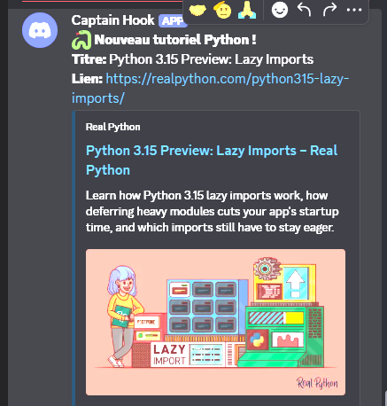
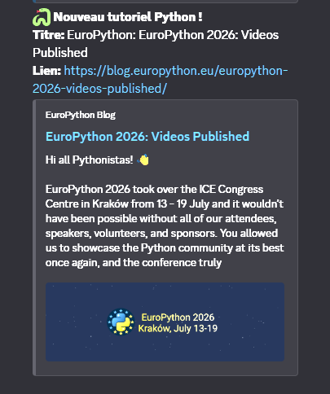
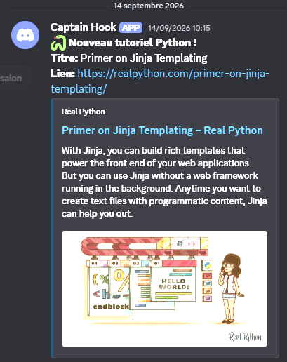
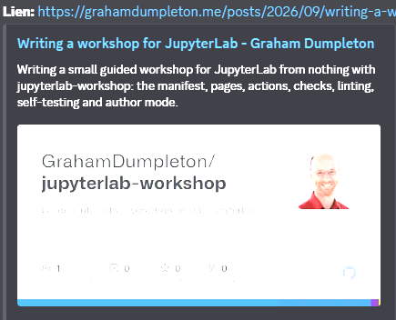
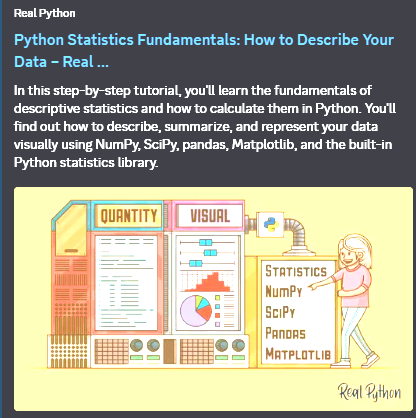

Mise en place d'un système de veille automatisé : un script Python analyse des flux RSS techniques (Real Python, Planet Python) et transmet les alertes en temps réel via un webhook Discord. L'exécution est planifiée automatiquement à l'aide de GitHub Actions.
J'ai orienté ma veille technologique sur Python et ses outils d'automatisation. Cela porte également sur les nouvelles bibliothèques mises à disposition pour une meilleure exploitation et optimisation de ce langage.
[Voir le code source]| Date | Sujet / Article | Source | Apport technique |
|---|---|---|---|
| 09/09/2026 | Python 3.15 Preview: Lazy Imports
 |
realpython.com | Python 3.15 introduit les imports paresseux via le mot-clé lazy (ou __lazy_modules__ pour maintenir la rétrocompatibilité), permettant de différer le chargement d'un module en mémoire jusqu'à sa première utilisation réelle. Cette nouveauté réduit drastiquement le temps de démarrage des outils en ligne de commande et des scripts automatisés, mais impose quelques règles strictes : elle est interdite dans les fonctions ou les blocs try, et n'est pas adaptée aux modules qui nécessitent de déclencher des actions immédiates dès leur importation. |
| 10/09/2026 | EuroPython 2026 : Bilan et vidéos en ligne
 |
EuroPython 2026 : Bilan et vidéos en ligne | EuroPython 2026 : Bilan et vidéos en ligne L'article dresse le bilan de l'édition 2026 de l'EuroPython qui s'est déroulée à Cracovie (Pologne) avec près de 1 400 participants. L'annonce principale est que toutes les vidéos des conférences (incluant le podcast core.py avec Guido van Rossum) sont désormais disponibles sur leur chaîne YouTube. L'événement confirme son succès avec une forte proportion de développeurs expérimentés (plus de 70%), des sujets dominés par le "Core Python" et le Web, et met en avant la reconnaissance de la communauté via la nomination de nouveaux "Fellows" de l'EuroPython Society ainsi que la remise du prix du Service Communautaire de la PSF. |
| 14/09/2026 | Jinja2
 |
jinja2 | Jinja2 est un puissant moteur de templates très populaire dans l'écosystème Python (souvent couplé au framework Flask) qui permet de générer dynamiquement des pages HTML ou des fichiers texte en y injectant des données issues du back-end. En séparant proprement la logique applicative de l'affichage, il propose une syntaxe intuitive permettant d'intégrer des variables ({{ variable }}) et des structures de contrôle comme des boucles ou des conditions ({% for %}, {% if %}) directement dans le rendu final. C'est un outil de rendu incontournable |
| 18/09/2026 | Jinja2
 |
Graham Dumpleton: Writing a workshop for JupyterLab | Ce qu'il faut retenir de cet article, c'est que l'automatisation en Python évolue vers la gestion et l'orchestration invisibles d'environnements de développement complets. L'utilisation de nouvelles bibliothèques, comme l'extension jupyterlab-workshop couplée à pytest, me montre comment il est désormais possible de tester et valider du code en arrière-plan de façon autonome. Cela illustre parfaitement la tendance des outils Python actuels : il ne s'agit plus seulement d'automatiser des tâches répétitives, mais de générer de véritables flux de travail (comme des pipelines d'intégration continue) capables de configurer, vérifier et isoler des environnements sans aucune intervention humaine. |
| 20/09/2026 | Python Statistics Fundamentals: How to Describe Your Data
 |
Graham Dumpleton: Python Statistics Fundamentals: How to Describe Your Data | Ce que je retiens de cet article pour ma veille, c'est que l'automatisation produit très souvent des volumes massifs de données (fichiers de logs, métriques de serveurs, données récupérées par scraping) qu'il faut pouvoir synthétiser à la volée. L'article m'a permis de faire le point sur les bibliothèques Python incontournables pour générer automatiquement des statistiques descriptives. Plutôt que de coder mes propres calculs mathématiques, je sais désormais que je peux utiliser le module natif statistics pour des scripts légers, ou me tourner vers des références comme NumPy, SciPy et pandas dès que la taille du jeu de données augmente. C'est une brique essentielle pour mes projets : un bon script d'automatisation ne doit pas se contenter de collecter de la donnée, il doit aussi pouvoir en extraire instantanément les grandes tendances (moyennes, médianes, variances) ou détecter automatiquement des anomalies (valeurs aberrantes) pour déclencher des alertes pertinentes. |